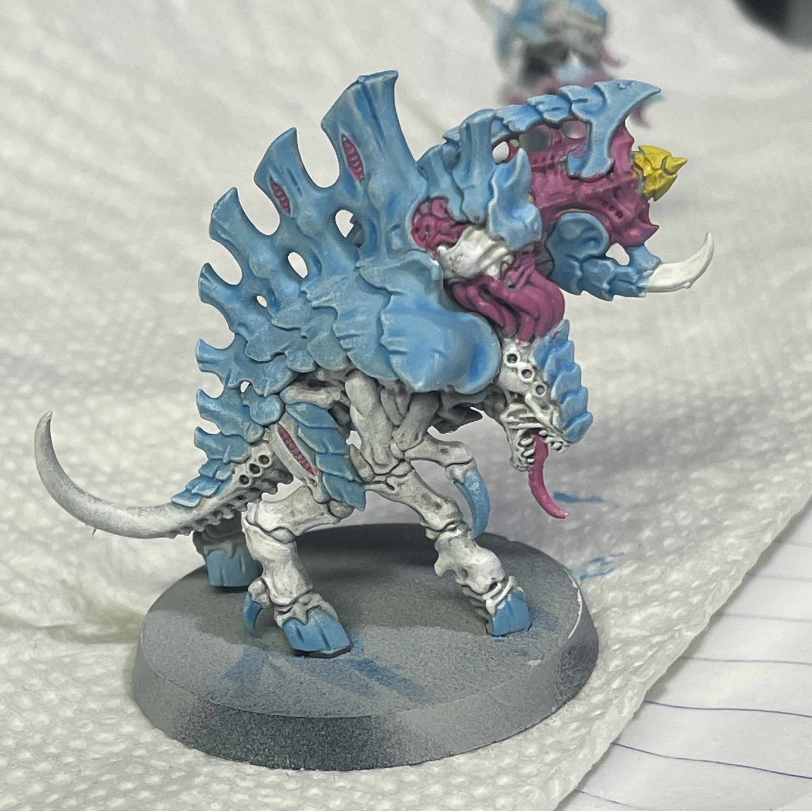

Hi all! My name is Jacob Shogren and I am a computer science major at Youngstown State University. I grew up in Boardman, Ohio not far from Youngstown. Ever since middle school, I knew I had an interest in coding and technology in general. This lead to me self studying some coding concepts and python in my later high school years, as well as me becoming a computer science major where I am now. Below, you can find out more about me through my hobbies and interests that I've gathered outside of tech.
Ever since my first game of Monopoly, I've always loved the turn-based strategy and memories you can make playing a boardgame with friends. Truly, I prefer boardgames over videogames, to me its a lot more fun having the people you're playing with around you rather than through a screen. The game I play the most is definately chess, both in person and online. This also leads into my love for painting, collecting, and playing tabletop games with miniatures. Warhammer 40k is my game of choice, however, I've recently gotten into D&D.
I've technically been playing music since grade school. Between the customary recorder concert and playing drums in my middle school concert band, this love for music only grew into my high school years. In high school, I continued drumming, as well as picked up guitar and keyboard. To this day I play the drums to jam with friends and make music on my own.
I've been playing sports my entire life, it's been a pretty important part of me since. From kindergarten to high school I played soccer for my schools and various clubs around Northeast Ohio. In high school I also ran track and played tennis my senior year. Unfortunately, I haven't been playing soccer or tennis as much as I'd like after high school, but now I watch sports more along with my dad, and I feel its a great way for us to get some quality time together. I mostly watch professional soccer, both MLS and Premier League where I support the Columbus Crew and Manchester United. For other sports I support my Cleveland teams.